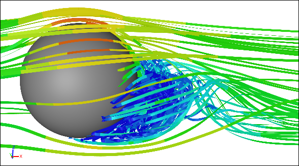

World Cup Balls
Every 4 years the FIFA World Cup rolls around and the question on everyone's lips is...how will the official match balls behave? Oh, and to a lesser degree, which nation will win? Ball aerodynamics are complex, but relatively well understood. Given the typical speed and spin of balls in the beautiful game, small changes to their surface texture (the focus of much recent effort in ball design) can have dramatic repercussions on their trajectories and hang times. Balls are deemed so important that each has its own Wikipedia page and each has tournament-flavored names thanks to Adidas, the long time ball designer.
CFD Simulation of Flow Around a Rotating Ball
Fevernova 2002
The Fevernova ball starred at the 2002 World Cup in Korea/Japan. Underneath the smooth outer surface consisting of stitched hexagonal panels was a layer of foam and a knitted chassis. The idea behind the innovative inner construction was to provide precise and therefore predictable trajectory control.
Adidas Fevernova World Cup 2002 BallImage license: Creative Commons CC BY 2.0, azrael74 from Berlin, Deutschland - Flickr
Criticism flowed, citing that the ball was too light, and it was even blamed for unexpected team exits during the tournament.
+Teamgeist 2006
The +Teamgeist ball used at the 2006 World Cup in Germany was the first tournament ball to use thermal bonding rather than stitching for the outer skin of the ball. The advantage of bonding was cited as a rounder ball that would produce more predictable performance. The smooth surface was almost waterproof.
Adidas +Teamgiest World Cup 2006 BallImage license: Creative Commons CC BY-SA 3.0, Kandschwar
Players weren't happy, claiming the ball was again too light and changed its behavior markedly when wet. Do you notice a pattern here?
Jabulani 2010
At the 2010 World Cup in South Africa, controversy swirled yet again around the design of the Jabulani ball. As with the previous edition of the World Cup ball, the Jabulani used thermal bonds to join the outer panels. Also the ball had a high-tech textured finish known as Grip 'n' Groove, which was more subtle than the dimples on a golf ball - being a variation on a riblet texture.
Adidas Jabulani World Cup 2010 BallImage courtesy of University of Adelaide
It was almost universally panned by World Cup players, especially goalkeepers. By implication, if it was difficult for goalkeepers to predict the balls trajectory, then we should have seen more goals than in previous tournaments. Instead we saw the lowest number of total goals ever at 145 in the expanded nation (32) World Cup era that started in 1998.
Brazuca 2014
The theme of the Brazuca ball for the latest 2014 World Cup in Brazil was testing, testing, and more testing. The ball was developed over 2 years, in which time it was tested at a number of tournaments and for friendly international matches, cunningly disguised as another ball. It features a new panel design and a new textured finish compared to its ill received 2010 counterpart.
Adidas Brazuca World Cup 2014 BallImage license: Creative Commons CC BY-SA 3.0
With the start of the 2014 World Cup imminent there doesn't appear to be any player dissent on the performance of the ball. Maybe we'll just have to wait until after the tournament for the lowly ball to yet again bear the brunt of player criticism for poor performances.
Feedback
Questions? Ideas? Problems?

Recent blog posts
- CFD Simulates Distant Past
- Background on the Caedium v6.0 Release
- Long-Necked Dinosaurs Succumb To CFD
- CFD Provides Insight Into Mystery Fossils
- Wind Turbine Design According to Insects
- Runners Discover Drafting
- Wind Tunnel and CFD Reveal Best Cycling Tuck
- Active Aerodynamics on the Lamborghini Huracán Performante
- Fluidic Logic
- Stonehenge Vortex Revealed as April Fools' Day Distortion Field
 Get our Blog feed
Get our Blog feed{kind=link}
{kind=link}
Comments
More World Cup Ball History
Can't get enough on the history of World Cup balls? Then check out "The History of the Official World Cup Match Balls".
NASA and World Cup Ball Aerodynamics
NASA goes to bat explaining World Cup ball aerodynamics.